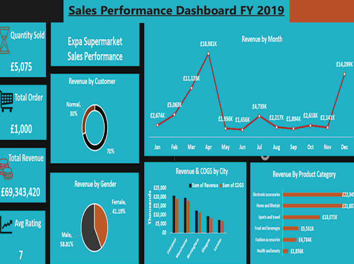
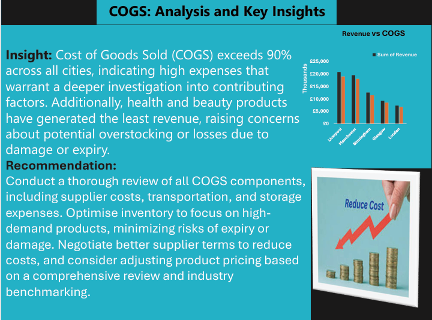
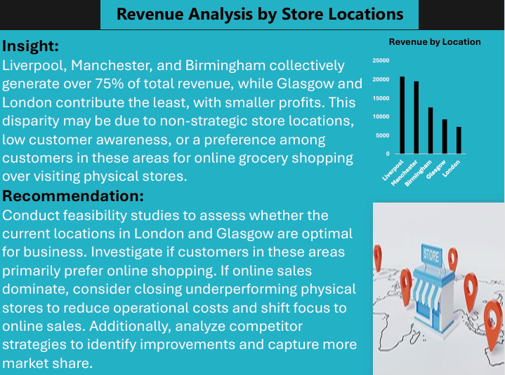
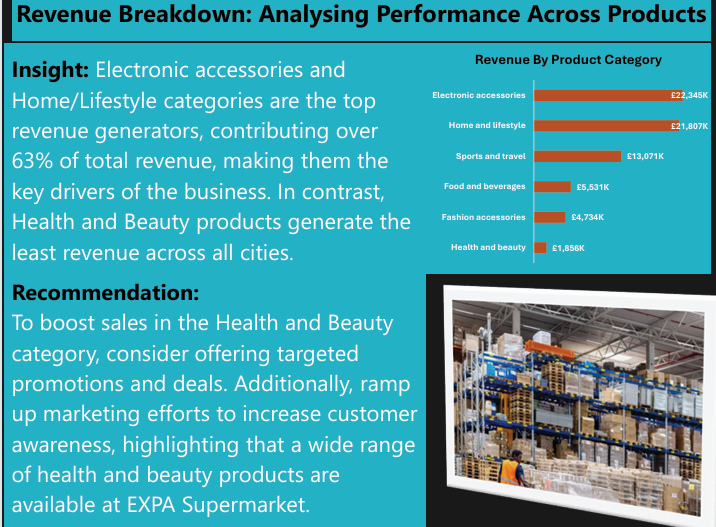
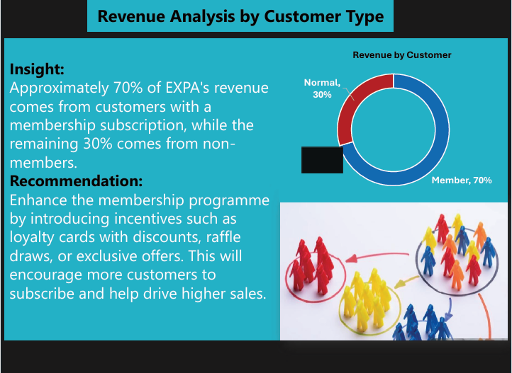

The business question
Which products, locations and customer groups contribute most to sales, and how does that picture change over the year? I organised the dashboard around those comparisons rather than presenting separate totals without context.
My approach
I collected and cleaned the sales records before building the dashboard in Excel. I used charts to compare monthly revenue, product categories, store locations and membership groups.
I brought revenue and cost of goods sold into the same view so that sales volume could be considered alongside the cost of generating it.
Dashboard and presentation





Questions the dashboard supports
- Sales mixCompare the contribution of different product categories.
- Location performanceReview sales and cost across the cities shown.
- Customer groupsExamine the contribution of members and other customers.
Interpretation and scope
The screenshots preserve the original project output. The source workbook is not published here, so the displayed totals, units and percentage statements should be checked against that workbook before they are used to support a business decision.
Differences between locations or product groups are starting points for investigation. The charts alone do not establish why a location performs differently or demonstrate the effect of a proposed change.